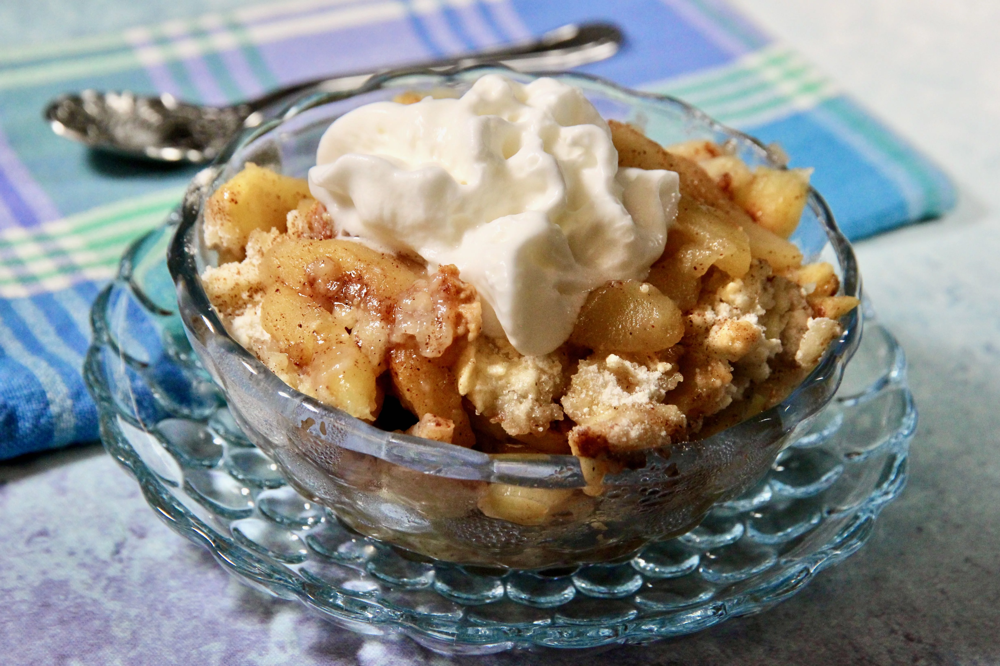

easy apple cobbler

description
This is a delicious apple cobbler. My son often requests it
instead of cake as a birthday dessert!
ingredients
- 6 large granny smith apples
- 3 tablespoons white sugar
- 1 teaspoon ground cinnamon
steps
- Preheat the oven to 350 degrees F (175 degrees C).
Combine 3 tablespoons sugar and cinnamon in a bowl.
- Layer apples in an ungreased 9x13-inch baking pan,
sprinkling each layer with cinnamon-sugar.
- Combine flour, 1 cup sugar, egg, and baking powder with a fork.